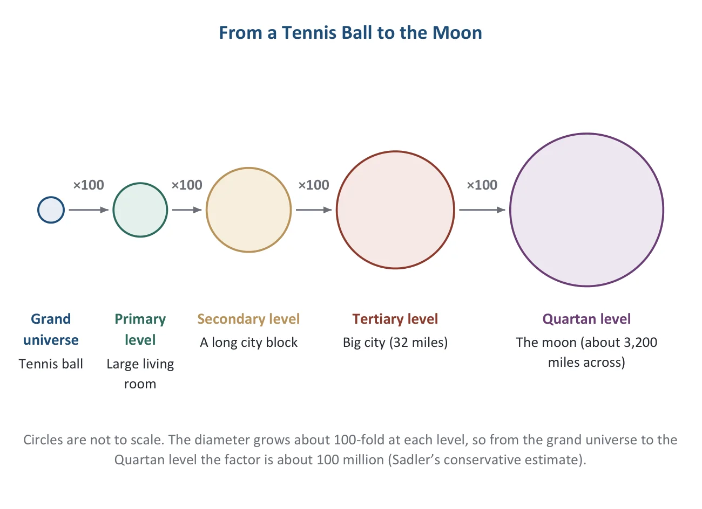

Original: A História Absonita, capítulo VIII, Magnitudes do universo-mestre (pp. 84–87)
Tendo viajado de Havona, através dos superuniversos, até o espaço exterior, Sadler faz uma pausa para perguntar quão grande, quão maciço e quão duradouro é o universo-mestre. Para tornar o tamanho espacial algo que se possa sentir, ele compara o grande universo a uma bola de tênis e depois amplia os níveis exteriores, passo a passo, até uma sala de estar, um quarteirão, uma grande cidade e a lua. Quanto à massa, reúne as pistas textuais: setenta mil agregações, 375 milhões de galáxias e a distribuição da gravidade do Paraíso. Quanto ao tempo, toma a idade da nebulosa de Andronover como unidade e estima a duração de cada idade.
Até aqui na jornada, Sadler deu pouca atenção ao tamanho ou à duração. Agora ele formula três perguntas. Qual é o tamanho do universo-mestre? Qual é a sua massa? Qual é a duração de cada idade do universo?
Ele começa pelo grande universo que conhecemos. Havona contém um bilhão de mundos, e os superuniversos estão planejados para abrigar sete trilhões de mundos habitados. As dimensões de Havona não são conhecidas com exatidão, mas o nosso superuniverso, Orvonton, tem cerca de meio milhão de anos-luz de diâmetro; o texto diz que os sistemas habitados mais exteriores de Orvonton estão a um pouco menos de 250.000 anos-luz do seu centro [32:2.11]. Deixando Havona de lado, o grande universo tem, portanto, aproximadamente um milhão de anos-luz de diâmetro.
Números como esses logo escapam aos sentidos. Assim, em vez de números, Sadler mostra proporções com objetos do cotidiano. Seja o grande universo uma bola de tênis. O Nível Espacial Primário tem então mais ou menos o tamanho de uma sala de estar bastante espaçosa. O Nível Espacial Secundário é um longo quarteirão erguido em forma de cubo, com a sala de estar flutuando no seu centro. O Nível Espacial Terciário é o cubo de uma grande cidade que mede trinta e duas milhas (cerca de 51 km) de cada lado. O Nível Espacial Quaternário é uma esfera de umas 3.200 milhas (cerca de 5.100 km) de diâmetro, aproximadamente uma vez e meia o tamanho da nossa lua; ainda assim, Sadler propõe usar a lua como símbolo.
Ele nos convida a encaixar essas imagens umas dentro das outras na imaginação. Faça flutuar a bola de tênis no meio da sala de estar, a sala de estar no meio do cubo do quarteirão, o quarteirão no meio do cubo da cidade, e a cidade no meio da lua. Depois volte à bola de tênis: ela é o todo da criação organizada de hoje, contendo Havona e os sete superuniversos, setecentos mil universos locais e sete trilhões de mundos habitados. O conselho final de Sadler é breve: imagine a bola de tênis e, depois, imagine a lua.

Seguindo a analogia, o diâmetro cresce aproximadamente cem vezes de um nível para o seguinte. Sadler acrescenta que situar o Nível Espacial Primário em cem vezes o grande universo pode ser cauteloso demais, e que o fator verdadeiro poderia passar de dez mil. Ainda assim, mesmo a estimativa cautelosa é avassaladora o bastante para que ele a mantenha. Observações relatadas no texto oferecem outras pistas. Uma zona de atividade energética começa a cerca de meio milhão de anos-luz além da periferia do grande universo e se estende por mais de vinte e cinco milhões de anos-luz; esse é o primeiro nível do espaço exterior [12:1.14]. E a mais de cinqüenta milhões de anos-luz além dos seus limites mais exteriores, foram detectadas manifestações de força de um segundo nível [12:1.15].
Há ainda menos informações sobre a massa do que sobre o tamanho. Contudo, é evidente que a massa física do espaço exterior excede em muito tudo o que se conhece no grande universo. Sadler coloca duas passagens lado a lado. Uma é a das setenta mil agregações de matéria vistas no capítulo anterior. A outra diz respeito às novas galáxias que os astrônomos logo verão.
Num futuro não muito distante, novos telescópios revelarão aos olhos surpresos dos astrônomos urantianos nada menos do que 375 milhões de novas galáxias nas extensões remotas do espaço exterior.12:2.3
Se as duas afirmações se referem à mesma criação física, não se pode saber. Sadler acredita que sim, e coloca toda essa massa no Nível Espacial Primário. Uma terceira pista é a gravidade do Paraíso. O Livro de Urântia diz que a maior parte da atração gravitacional do Paraíso já está empenhada em sustentar as criações do espaço exterior.
Em outras palavras: no presente momento, cerca de noventa e cinco por cento da ação de gravidade cósmica ativa da Ilha do Paraíso, computados nessa teoria da totalidade, estão empenhados em controlar os sistemas materiais que se situam além das fronteiras dos universos organizados atualmente.12:3.8
Esses universos futuros mal começaram e continuarão crescendo por um tempo muito longo. Todas as pistas convergem: tanto em tamanho quanto em massa, o espaço exterior supera imensamente o grande universo.
Quando se calculam as durações das idades do universo, os números se tornam grandes demais para manejar. Assim como as distâncias interestelares são medidas em anos-luz e não em milhas, Sadler sugere criar também uma grande unidade para o tempo. Ele toma como essa unidade a idade da nebulosa de Andronover, que deu origem ao nosso sol: cerca de um trilhão de anos. Ele a chama de Unidade de Tempo de Andronover (Andronover Time Unit), ou UTA, abreviadamente. A razão da escolha é que a idade de Andronover é o mais longo período de tempo indicado em O Livro de Urântia.
O texto diz que a nebulosa de Andronover foi formalmente iniciada há 875 bilhões de anos. O “cerca de um trilhão de anos” de Sadler é um arredondamento desse número.
Há 875 bilhões de anos, a enorme nebulosa de Andronover, de número 876 926, foi devidamente iniciada.57:1.6
| Idade | Duração (UTA) | Comparada com a idade anterior |
|---|---|---|
| Segunda idade (atual) | 50.000 | — |
| Terceira idade (Nível Espacial Primário) | 5 milhões | 100 vezes |
| Quarta idade (Nível Espacial Secundário) | 500 milhões | 100 vezes |
| Quinta idade (Nível Espacial Terciário) | 50 bilhões | 100 vezes |
| Sexta idade (Nível Espacial Quaternário) | 5 trilhões | 100 vezes |
Os números da tabela simplesmente mostram quantas vezes cada idade é mais longa do que a idade de Andronover. O que merece atenção é que cada mudança de idade multiplica a duração por cem, a mesma razão pela qual o diâmetro dos níveis espaciais cresce de um para o seguinte. Os cálculos por trás deles aparecem nos Apêndices XVI e XVII do original e são retomados no nosso comentário sobre esses apêndices.
Sadler calcula que a atual segunda idade pode já ter transcorrido em cerca de três quartos. Mesmo assim, o quarto restante equivale a mais de dez mil UTA, mais de dez mil trilhões de anos. Ele acrescenta, em tom leve, que temos tempo de sobra para chegar ao Paraíso.